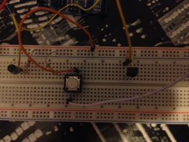
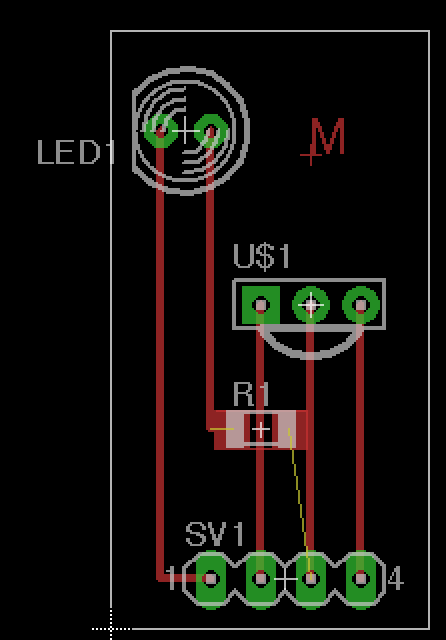

11 - Output devices
Intro
The assignment of this week was to create a board to use an output device.
Designing the shield
Starting from my final project idea i decided to create a universal IR remote control that can be used to command any object. I found a very useful and interesting library that allows to receive and send IRcommands. IRcommands are not so easy as you have to consider the frequency and the specific command. Each vendor has his own commands so there are online libraries with remote control codes. For this reason I decided to make a board that could receive a command, store it and then send it back when asked.
For this reason I has to use a IRreceiver decoder and an IR led. The IR decoder receives the IR signal and gives a digital output. It has 3 pins and you can see the pinout below:

To test the circuit I made a prototype on a breadboard.

Using the IRrecord example of the library I used the circuit to turn off my tv.
So, in order to make a shield to host the sensor and the led I need two digital pin and the power. On the Fabkit left side we have a VCC, GND and two digital pin close.
I designed the board with Eagle and you can see the board image below.

I didn't had the chance to mill the board so I will complete it during the next weeks.
You can download the board and the schematic.
- ©
 Attribution, non-commercial, share alike.
Attribution, non-commercial, share alike. - Design: HTML5 UP